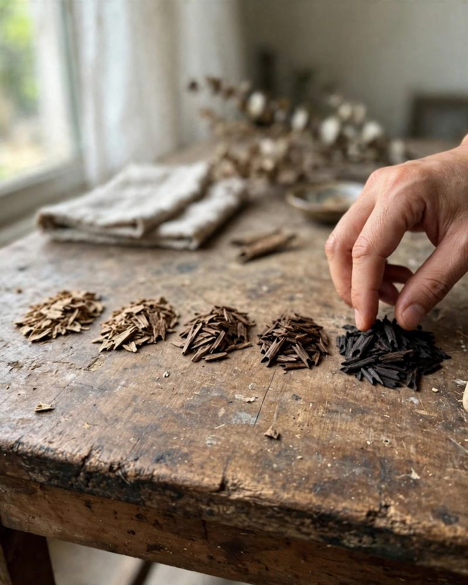

油脂是沉香价格的决定性因素：油脂越丰富，香韵越浓，价格越高。油脂的多少看油线：油线密集、自然，价格高；油线稀疏、断断续续，价格低。
油脂的多少也和结香时间有关：结香时间越长，油脂越丰富。但结香时间不是唯一因素，树种、环境、受伤方式都有影响。
产区的名气影响价格：芽庄、达拉干这些名气大的产区，同品质下价格更高。但产区名不是品质保证，同一产区里也有品质差异。
不要为产区名多付钱：价格看的是具体那块料的油脂、香韵和品相，不是产区名。产区名是参考，不是价格标签。
沉香的稀缺性是价格的重要因素：好料稀缺，结香要几年到几十年，野生的越来越少。稀缺的东西，价格自然高。
但稀缺不等于好：稀缺的料香韵不一定好，常见的料香韵不一定差。稀缺是价格因素，不是品质标准。
工艺影响价格：手串的打磨、雕件的雕工、精油的蒸馏工艺，都有成本。工艺好的产品，价格更高。
工艺的价值在细节：手串的孔道光滑、珠子匀称，雕件的线条流畅、比例协调。工艺粗糙的产品，再好的料也卖不上价。
第一，虚高定价：有些商家把价格定得很高，再打折卖，营造捡漏的感觉。不要被原价迷惑，看实际成交价。
第二，低价陷阱：价格明显低于市场水平的，基本有问题：泡油、染色、假料。不要贪便宜。
第三，故事定价：有些商家讲故事卖沉香：百年老树、深山野料。故事不能当价格依据，看料子本身。
多看多比：看不同的商家、不同的料，对比价格和品质。心里有数了，再下手。
问清楚：油脂、产区、稀缺性、工艺，每一项都问清楚。商家应该讲得清，讲不清的先别买。
| 因素 | 怎么影响价格 | 注意 |
|---|---|---|
| 油脂 | 油脂越丰富，价格越高 | 油线密集自然是关键 |
| 产区 | 名气大的产区价格更高 | 别为产区名多付钱 |
| 稀缺性 | 好料稀缺，价格高 | 稀缺不等于品质好 |
| 工艺 | 工艺好的产品价格更高 | 看细节：孔道、打磨、雕工 |